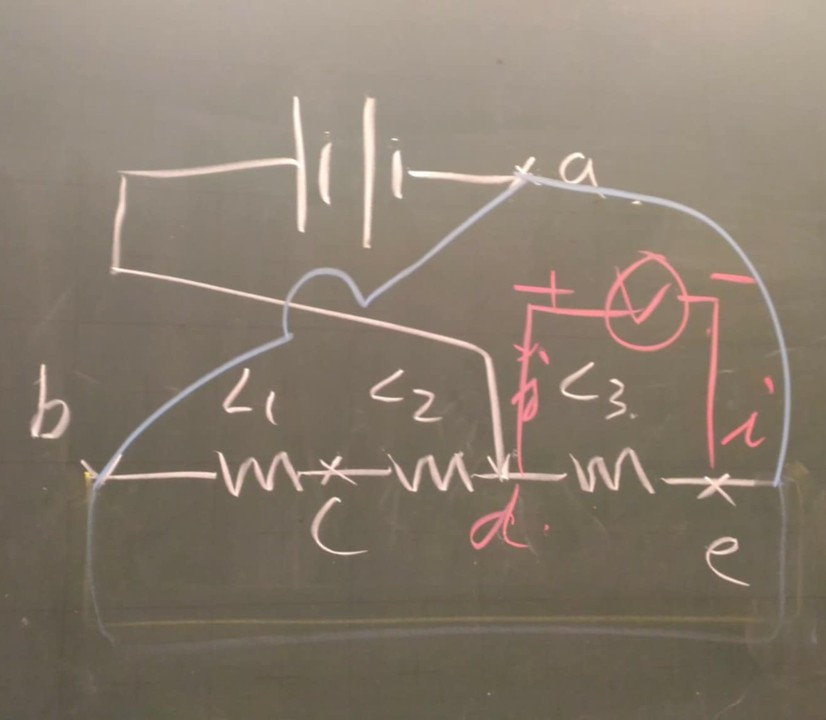

Hello there! I'm a fourth year student studying electrical engineering in National Taiwan University. During my thrid year in bachelor, I went on an exchange program to Technische Universität München. The avatar of mine in the figure above is a circuit bearing resemblance of the spaceshift Slave I from Star Wars.
Throughout over half of my bachelor study, I researched on light field display technology under the guidance of professor Homer H. Chen.
My interest is in mathematical physics, applying mathematics to different areas of engineering, especially applied linear algebra and differential geometry. I'm currently learning graph-related signal processing.
Final project for the course "Special Topics on Quantum Information Science" given in the sprin of 2025 by prof. Shih-Han Hung. The project topic is on "Quantum Signal Processing and Nonlinear Fourier Transform." The slides for the presentation and a final written paper with their LaTeX codes are included.
View on GitHubLecture notes for the course "Modern Coding Theory and Technology" given in the spring of 2025 by prof. Hsin-Po Wang.
View on GitHubEmail: b10901042@ntu.edu.tw
YouTube: channel